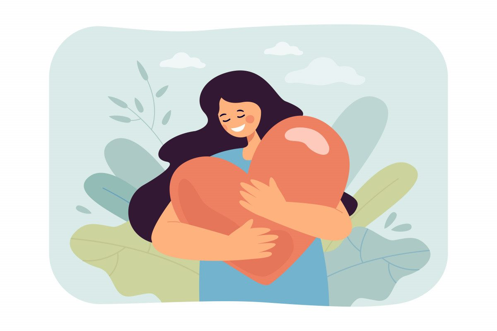

Многие из нас ловили себя в ситуации, когда уже согласились помочь, а внутри встаёт сопротивление.
Представь: ты снова говоришь «да» - коллеге, подруге, родным - и снова остаешься наедине со своей усталостью и вопросом: «А когда же я?»
На самом деле ты не одна. И та тяжесть, что ложится на плечи после очередного «конечно, я помогу», - не твоя слабость. Это знак того, что твоя душа, которая умеет глубоко чувствовать и заботиться о других, наконец просит внимания к себе.
Мы часто путаем свою истинную доброту - ту, что идет из изобилия - с болезненной обязанностью быть удобной. Как будто наша любовь должна постоянно что-то доказывать. Откуда это берётся? Из давних уроков, усвоенных когда-то: чтобы тебя ценили, ты должна быть полезной. Что твои потребности - это последнее, о чем стоит думать. Наверняка ты сейчас вспомнила эти чудесные слова родителей или учителей: «Я - последняя буква алфавита».
И теперь, будучи взрослой и сильной, ты продолжаешь жить по этим правилам, будто всё еще от них зависит твоё благополучие. А потом ловишь себя на мысли, что часами не можешь выбрать чашку в магазине, потому что не понимаешь, какая тебе нравится. Или что на простой вопрос «Чего ты хочешь?» внутри наступает тишина или поднимается волна тревоги.
Первое, что важно понять: тебе не нужно «исправлять» свою отзывчивость. Её не нужно ломать или стыдиться. Её нужно лишь... перенаправить. Как цветок, который тянется к солнцу, - ему не нужно менять свою природу, ему нужно повернуться к правильному свету.
Начни не с громких «нет» и не с поиска грандиозных желаний. Это может быть слишком страшно и сложно. Начни с самой маленькой, почти невидимой паузы. Попробуй в следующий раз, когда в ответ на просьбу уже готова сказать «да», сделать вот что:
- Поставь мысленно точку. Скажи себе: «Стоп. Я здесь».
- Спроси себя: «Как я себя сейчас чувствую? Устала? Напряжена? Сжалась?». Просто отметь это состояние, без оценки.
- Дай себе разрешение на отсрочку. Самые честные и мягкие фразы часто звучат так: «Дайте, пожалуйста, я подумаю и отвечу вам чуть позже» или «Спасибо за предложение, мне нужно свериться со своими планами».
Эта короткая пауза - и есть твой первый, самый важный шаг к себе. Не к борьбе, а к заботе.
Помни, что личные границы - это не крепостные стены, которые ты строишь против мира. Это как берег твоей реки, который не дает ей растечься и исчезнуть. Когда у тебя есть этот берег, твоя энергия не утекает в песок, а накапливается. Ты можешь давать другим из глубины, а не из последних сил. И тогда твоё «да» становится лёгким и радостным, потому что оно - настоящее.
Возвращаться к себе - это не эгоизм. Это попытка наконец-то подружиться с той женщиной, которая живёт в тебе. Которая устала, которая иногда злится, которая имеет право на тишину и на свой, никому не понятный выбор чашки в магазине.
Ты можешь начать сегодня. Не с глобального, а с одного простого вопроса, обращенного внутрь: «Что тебе нужно прямо сейчас? Даже если это просто пять минут, чтобы ни о чём не думать». И дать себе это. Просто потому, что ты - есть. И этого уже достаточно.
Статья подготовлена на основе материалов психологической практики. Если тема откликнулась, вы можете связаться со мной для обсуждения возможности индивидуальной работы.
Статья опубликована на b17.ru.